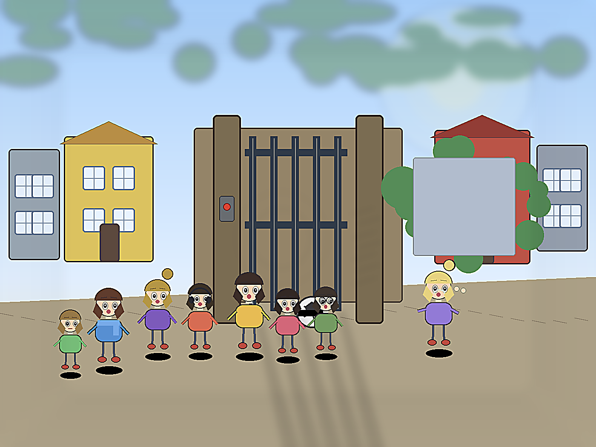
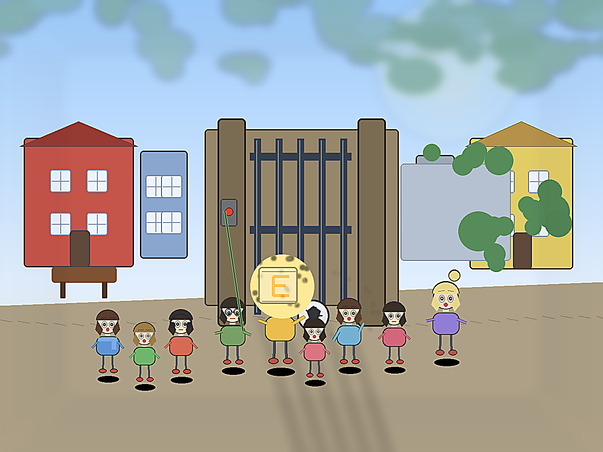

Приключения Истины в Нижнем Новгороде
Глава 16. Ложный герой
— Мяч застрял, — сказал Яша так тихо, будто это был не мяч, а его личная катастрофа.
Ластик стояла за воротами. Сначала она держалась важно. Потом посмотрела на улицу, на закрытые створки и уже не так важно сказала:
— Ручка, открывай.
Ручка нажала кнопку ещё раз. Потом ещё. Ворота коротко пискнули и остались закрытыми.
— Я сейчас, — сказал Лёва и шагнул вперёд. — Надо просто дёрнуть сильнее.
— Не надо, — сказала Истина.
— Да я быстро.
— Нет.
Яша присел у ворот.
— Я могу мяч ногой вытащить. Или палкой. Или рукой, если пролезть.
— Тоже нет, — сказал Дима.

Саша-Дима наклонился и посмотрел на нижнюю щель.
— Там почти можно пролезть.
— Никто никуда не лезет, — сказала Истина.
Оливия открыла рот, будто хотела сказать: «Я за зло». Но посмотрела на Ластик и закрыла рот обратно.
Карта дрогнула. На ней вспыхнула огромная буква:
Г
Лёва расправил плечи.
— Вот. Герой. Это про меня.
Буква Г стала кривой, потемнела и съехала вниз, как мокрая наклейка.
Карта написала:
ЛОЖНАЯ БУКВА. ГЕРОЙСТВО НЕ ВЕДЁТ КАДР.
— Обидно, — сказал Лёва.
— Зато честно, — сказала Вика.
Истина быстро огляделась.
— Так. Вика, посмотри, где кнопка связи. Ты лучше всех читаешь мелкое. Дима, держи Яшу подальше от ворот. Катя, беги к лавке у красного дома. Там взрослые иногда сидят. Позови кого-нибудь. Полина, говори с Ластиком. Ручка…
Ручка подняла подбородок.
— Что я?
— Ты её слышишь лучше всех. Не записывай. Разговаривай.
Ручка моргнула.
— Ластик, ты меня слышишь?
— Да, — ответила Ластик. — А вы уйдёте?
— Нет, — сказала Ручка. — Я просто… я тут.
Это прозвучало странно просто. Даже Ручка удивилась самой себе.
Вика нашла маленькую кнопку связи возле ворот.

— Тут написано: вызов охраны.
— Нажимай, — сказала Истина.
Кнопка пискнула. Никто не ответил.
Лёва стоял рядом и смотрел на Ластик уже без понтов.
— Я не герой, ладно, — буркнул он. — Я просто испугался, что она там одна.
Карта стала тёплой. На ней появилась настоящая буква:
Е
СМЕХ ЭТО САМОЕ...
Но ворота снова пискнули.